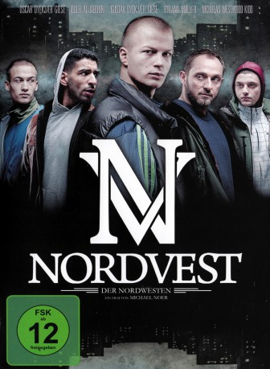

#3264 Nordvest - Der Nordwesten
 
 IMDB-Wertung: 6.8 / 10
IMDB-Wertung: 6.8 / 10  Metascore: 0
Metascore: 0 
Der 18-jährige Caspar lebt im ärmsten Stadtteil von Kopenhagen und hat ein Ziel: er will ganz nach oben, egal was er dafür tun muss. Er beginnt damit, kleinere Überfälle für Jamal zu erledigen, bevor er für den Gangsterboss Björn arbeitet. Bisher ging noch alles gut, doch als Jamals Gang Rache schwört, wird der kleine Bandenkrieg zu einem brutalen Kampf mit Waffen. Caspar muss sich fragen, wie weit er gehen will und ob er seinen kleinen Bruder involvieren will oder nicht.
Jahr: 2013
Dauer: 84 Minuten
FSK: 16
Land: Dänemark Studio: Studio Hamburg EnterprisesTonspuren:
Untertitel:
Auflösung: 1080p (1920x1080) Größe: 5396 MB
Genre: Action, Drama, Krimi
Regisseur: Michael Noer
Drehbuch: Rasmus Heisterberg, Michael Noer
Soundtrack:
Darsteller:
 Roland Møller als Bjørn
Roland Møller als Bjørn- Peter Zandersen als Kim Hansen, Police Officer
- Paw Terndrup als Police Officer 1
- Helle Pilar Larsen als Bargæst
- Gustav Dyekjær Giese als Casper
- Oscar Dyekjær Giese als Andy
- Lene Maria Christensen als Olivia
- Annemieke Bredahl Peppink als Freja
- Nicholas Westwood Kidd als Robin
- Dulfi Al-Jabouri als Jamal
- Ali Abdul Amir Najei als Ali
- Sandra El-Hussein als Irem
- Clement Black Petersen als Theis
- Marina Vorobyeva als Sofia
- Jelena Bundalovic als Petra
- Sisse Navntoft als Gitte
- Irina V. Babenko als Escort Girl 1
- Monika Paula Fasula als Escort Girl 2
- Kevin Andersen als Kenneth
- Michael Rasmussen als Bagsværd
- Habib Kaliffen Moutran als Kaliffen
- Carsten Hartmann als Police Officer 2
- Niels Thanild als Police Officer 3
- Sulayman Saidy als Muhammed / Boys Gang
- Mahdi Abdul Amir Najei als Muhammed / Boys Gang
- Hussein Abdul Amir Najei als Muhammed / Boys Gang
- Jacob Wagner Guldager als Alpha Male / Rich Kids
- Morten Sabroe als Alpha Male / Rich Kids
- Nick Philip Engel als Alpha Male / Rich Kids
- Oliver Altman als Alpha Male / Rich Kids
- Philip Lotko als Alpha Male / Rich Kids
- Merete Sveistrup als Karen, Lawyer
- George Sengore als George
- Hamza Al.Jaburi als Jamal's Father
- Gabriella Ravn als Irem's girlfriend
- Torben Andreas Molbech Jessen als Torben , uncredited
Datei: X:\2013(N-Z)\Nordvest - Der Nordwesten (2013, FSK16, 1920x1080).mkv seit 25.02.2016
Festplatte: HD 2013(I-Z)-2014(A-Z)
 Es gibt insgesamt 133 Filme in der Gruppe '2013(N-Z)'
Es gibt insgesamt 133 Filme in der Gruppe '2013(N-Z)'